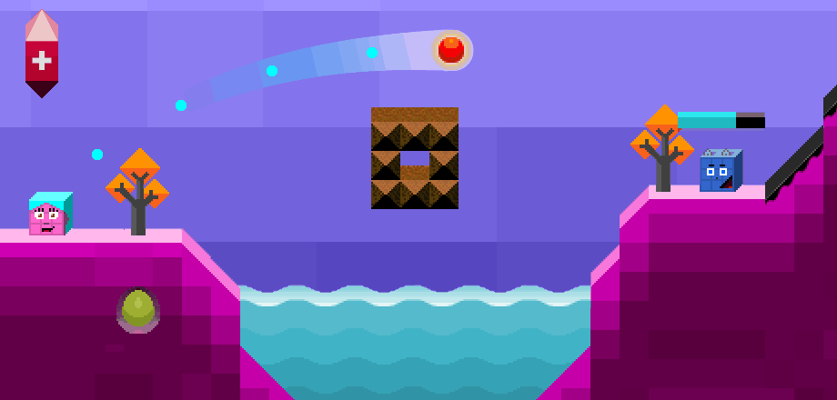

< < < Back
6 Things That Have Drastically Improved My Life – Return Of Kings
To hack through life and find a solid and somewhat holistic lifestyle is not exactly rocket science. Many components of such a lifestyle are also things that can be generalized and thus be shared by many men.
Over the last 10 years or so I have followed a particular path in life, something that even was partly formed during my earlier years but has been solidified over time. With slight modifications and temporary transgressions or deviations, of course, but mainly on the same route.
What I realized is that it is much more difficult to follow a plan than it is to merely make it. I will briefly explain my path’s main parts and some of the important details that can be valuable. I will also show how these elements are largely inter-related and put together constitute a holistic approach.
1. Education and self-education
For good reasons, one has to be skeptical about contemporary education in Western societies and I do really respect those who are into more physically demanding and risky occupations (as a student I have actually worked with some of these types of jobs). For a European like myself, this aspect might be somewhat more beneficial in terms of funding but a reasonable degree of sound skepticism is good to maintain.
Irrespective of that, higher education has actually helped me a lot in terms of personal development, work and increased disposable income. To write a thesis of 100 pages or more – even if someone might not call arts real science, which I by the way largely agree with – takes a lot of effort, and needless to say some jobs which require a particular academic background will pay off.
However, I would definitely not be as knowledgeable as I am today without broad and deep autodidactism, i.e. self-learning and self-education. If one misses too many valuable perspectives within the confines of general education, one’s own interests and tips from other people can complement and guide one into other directions.
As of today I can easily go from holy scriptures to genetics studies and I have both regular education and self-education to thank for that. If higher education is not an option, then continuous self-education is the way to go in this respect.
2. Fitness lifestyle
I do not know at exactly which point I decided to get into fitness, but like most people I started to work out rather early, after doing sports during adolescence. The difference is that I took Aristotle’s, oft-repeated words, seriously:
“Excellence is an art won by training and habituation. We do not act rightly because we have virtue or excellence, but we rather have those because we have acted rightly. We are what we repeatedly do. Excellence, then, is not an act but a habit.”
Hence I started to work out regularly at about 20 and about 10 years later I was good enough to compete in fitness. Had I not partaken in so many bacchanalia I might have tried that earlier.
Typically, it will take me about 6-12 weeks to hit 5% of body fat. After a cynical cost-benefit analysis I have decided to not take these competitions too seriously. Partly because many, unlike myself, compete with the help from steroids, but the diets have definitely had positive spill-over effects, not just for health and physical aesthetics but for game and general well-being.
When I drop below 10% my confidence will get a significant boost and I do not care if I get rejected. Both the inner and outer game benefit in a positive feedback loop relationship. My worst periods of life have been when I have had more body fat, like 15-20%, whereas my best have been when I am in great shape.
Fitness is not black or white and one can find a more balanced position, but let’s say 8-15% of body fat and a relatively muscular natural bodybuilding physique are definitely beneficial for aspiring males. The ROI is generally high, as I see it, as long as one does not become socially isolated due to gym addiction. Pay attention to what girls do, not what they say (generally). And they do love muscles and a ripped body, which scientists such as David Buss and Cindy Meston have confirmed in their research.
3. Work
One’s workplace can be toxic and it is wise to avoid its many pitfalls. However, to work is indeed something positive for social interaction, routine, and one’s ability to obtain disposable extra income. It might seem as to state the obvious, which it is, but sometimes one has to do that in order to get things straight.
Moreover, if one looks at work in a somewhat larger framework, it includes a whole plethora of different tasks, such as to read and write, as well as those physical occupations that I have had in my teens and as a university student. All of them have been beneficial for my well-being and they have also led to other positive outcomes.

4. Fashion
Such as to be able to buy clothes. Even with a more minimalist-akin approach, nice pants, shoes, shirts, and jackets will not pop up from nowhere. One needs disposable income.
Fashion has changed my life, and I am not even that much into fashion. The point is that good grooming is what separates people in current times. The guy with an ugly pair of pants will not be respected, especially not by the opposite, very judgmental sex.
A blend of traditional and conventional masculine fashion and some metrosexual elements have been quite beneficial throughout many parts of my life. But only as long as it is attributed by a good physique, confidence and game. Fashion and appearance as isolated factors are not enough.
5. Travel
I am a rooted, not rootless cosmopolitan, who enjoys to partake in what other cultures and locations have to offer. Culture, history, adventures, girls – one thing does not exclude another, even though different trips imply different priorities.
To travel, more or less, can be regarded as a goal in itself, and is one of the major benefits from globalization. I think to travel is something that is valuable throughout most phases of a lifetime, but as a younger person it is most optimal to do it if one already has disposable money, well-defined muscles, a sense of fashion – and game.
Needless to say, traveling comes with both pros and cons, but overall the former outcompetes the latter.
6. Learning game

Many of the things that I have mentioned so far are directly or indirectly related to game. But to be aware of game has been as important as its conventional underlying components, mentioned above.
Like many other I started with Neil Strauss’ book and later some other writers, as well as to observe successful people in my social circles. I have mostly used common sense approaches for normal people.
Anyway, what has made me so appreciative of this element of modern male existence, is that whenever I look back at my life, I come to understand that game is required for action to take place. Even as a 12-year-old I used game when I was brave enough to kiss a girl for the first time. Whenever I have been shy and introvert, I have only had my hand at my disposal. Hence when one steps out of solid game, it is game over, but if one learns it to some significant extent, life will likely improve.
Read More: A Basic Principle That Will Change Your Life